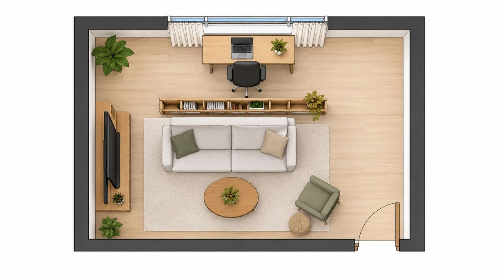

рабочее место в гостиной занимает 2–3 м²: стол 1200×600 мм, проход за креслом 700–900 мм, свет 400–500 лк на столе. Розеток на рабочем месте нужно 4–6: ноутбук, монитор, лампа, зарядки. Обустройство обходится в 25 000–90 000 руб. Главная ошибка — ставить стол в проходе между диваном и телевизором: работа не идёт, а отдых ломается.
Где поставить рабочее место
| Вариант | Площадь | Плюсы | Минусы |
|---|---|---|---|
| У окна | 2–2,5 м² | естественный свет, вид | блики на экране, холод от окна |
| В нише или у стены | 1,5–2 м² | не мешает отдыху | нужен доп. свет |
| За диваном (консольный стол) | 1,2–1,5 м² | экономия места | узкий стол 400–500 мм |
| Встроенный шкаф-кабинет | 1,5 м² | закрывается дверцами | дороже на 30–50 % |
| На лоджии или балконе | 2–3 м² | полная изоляция | нужно утепление |
Лучший вариант для гостиной 18–22 м² — ниша или угол у окна: рабочее место не пересекается с диванной зоной, и вечером ноутбук не мешает смотреть кино.
Размеры и эргономика
| Параметр | Норма | Комментарий |
|---|---|---|
| Стол | 1200×600 мм | минимум 1000×500 |
| Высота стола | 720–750 мм | под рост 165–180 см |
| Проход за креслом | 700–900 мм | для отъезда кресла |
| Глубина посадки | 500–600 мм | до стены от края стола |
| Монитор от глаз | 500–700 мм | верх на уровне глаз |
| Высота кресла | 420–480 мм | регулировка 100 мм |
Проход 700 мм — минимум, при котором можно встать и отъехать. Если стол стоит в проходной зоне, оставляют 900 мм: иначе каждый проход мимо становится препятствием.
Зонирование без перегородок

| Приём | Цена | Эффект |
|---|---|---|
| Стеллаж-разделитель 300 мм | 8 000–25 000 руб. | визуальная граница + хранение |
| Ковёр 200×300 | 6 000–20 000 руб. | обозначает зону отдыха |
| Разный свет: тёплый и нейтральный | 3 000–12 000 руб. | переключает режим |
| Смена покрытия пола | 8 000–30 000 руб. | чёткая граница зон |
| Штора-перегородка | 4 000–15 000 руб. | закрывает стол вечером |
Стены и перегородки в гостиной не нужны: достаточно стеллажа и ковра. Полноценная перегородка отнимает 1–1,5 м² и делает комнату уже.
Свет на рабочем месте
| Светильник | Освещённость | Цена |
|---|---|---|
| Настольная лампа | 400–500 лк на столе | 2 500–9 000 руб. |
| Бра над столом | 300–400 лк | 2 000–7 000 руб. |
| Трековый светильник | 300–500 лк | 1 500–5 000 руб. |
| Общий свет 3000–4000 К | 200–300 лк | по проекту |
Для работы нужен нейтральный свет 4000 К и освещённость 400–500 лк: тёплые лампы 2700 К дают желтизну и утомляют глаза. Свет должен падать слева для правши и не давать блик на экран.
Розетки и проводка
| Что подключить | Розеток | Расположение |
|---|---|---|
| Ноутбук, монитор | 2 | над столешницей 150–200 мм |
| Лампа, зарядки | 2 | сбоку или в тумбе |
| Принтер, роутер | 1–2 | внизу у плинтуса |
| Интернет | 1 | RJ-45 рядом с розетками |
Розетки ставят на 150–200 мм выше столешницы или встраивают в неё — так кабели не висят гирляндой. Блок из 4 розеток с USB стоит 1 500–4 500 руб. и закрывает 80 % задач.
Стол и хранение
| Мебель | Размер | Цена |
|---|---|---|
| Стол письменный | 1200×600 | 8 000–30 000 руб. |
| Стол-консоль за диваном | 1400×400 | 7 000–22 000 руб. |
| Кресло офисное | — | 9 000–35 000 руб. |
| Стеллаж 300 мм | высота 1800 | 8 000–25 000 руб. |
| Тумба под принтер | 400×400 | 4 000–12 000 руб. |
Стол глубиной 600 мм — рабочий минимум: за 400–500 мм не поставить монитор на комфортное расстояние. Консоль за диваном годится только для ноутбука и коротких сессий.
Смета обустройства
| Позиция | Стоимость |
|---|---|
| Стол 1200×600 | 8 000–30 000 руб. |
| Кресло | 9 000–35 000 руб. |
| Стеллаж-разделитель | 8 000–25 000 руб. |
| Свет: лампа или бра | 2 500–9 000 руб. |
| Электрика: 4 розетки и вывод | 6 000–15 000 руб. |
| Декор, ковёр, шторы | 6 000–20 000 руб. |
Итого 39 500–134 000 руб. Без замены мебели и с готовой электрикой обустройство укладывается в 15 000–35 000 руб.
Шум и созвоны
Гостиная — самое шумное место в квартире: телевизор, разговоры, кухня рядом. Для регулярных созвонов нужны акустические меры, иначе микрофон собирает всё помещение.
| Мера | Цена | Эффект |
|---|---|---|
| Акустические панели 30×30 см, 4 шт. | 3 000–12 000 руб. | −3–6 дБ эха |
| Плотные шторы 250 г/м² | 6 000–18 000 руб. | гасит отражения от окна |
| Ковёр на стену или пол | 6 000–20 000 руб. | −2–4 дБ |
| Микрофон-петличка или гарнитура | 3 000–15 000 руб. | убирает шум комнаты |
| Стеллаж с книгами у стола | 8 000–25 000 руб. | рассеивает звук |
Дешевле всего помогает гарнитура с направленным микрофоном: она отсекает 70–80 % фонового шума. Панели и шторы нужны, если работают двое и созвоны идут параллельно.
Если работают двое
Два рабочих места в одной гостиной требуют 4–6 м² и разделения хотя бы стеллажом. Столы ставят вдоль противоположных стен или «спиной к спине» через стеллаж 300 мм: так камеры не смотрят друг на друга, а звук частично гасится.
| Схема | Площадь | Когда |
|---|---|---|
| Два стола вдоль одной стены | 3,5–4 м² | комната от 20 м² |
| Столы друг напротив друга | 4–5 м² | нужна перегородка |
| Стол + место на лоджии | 2 + 2 м² | лоджия утеплена |
| Встроенный шкаф-кабинет | 1,5 м² | для редких созвонов |
При двух местах розеток нужно 8–10 и два отдельных вывода интернета: один роутер на 6–8 устройств справляется, но видеозвонки в двух комнатах одновременно требуют канала от 50 Мбит/с.
Порядок работ
- Замерить комнату и определить зону под стол с проходом 700–900 мм.
- Проверить, откуда падает свет: окно не должно быть за спиной или напротив экрана.
- Спланировать розетки и вывод интернета до чистовой отделки.
- Собрать мебель, выставить стол по уровню.
- Настроить свет: 400–500 лк на столе, 3000–4000 К.
- Обозначить границу зон ковром или стеллажом.
Ошибки и их цена
| Ошибка | Последствие | Исправление |
|---|---|---|
| Стол в проходе | мешает отдыху и работе | перестановка, новые розетки |
| Одна розетка на рабочем месте | тройники и гирлянды кабелей | доп. монтаж 3 000–8 000 руб. |
| Стол напротив окна | блики на экране весь день | перестановка или жалюзи |
| Только тёплый свет 2700 К | усталость глаз | замена ламп |
Чек-лист перед покупкой
- Проход за креслом не меньше 700 мм.
- Стол глубиной от 600 мм.
- 4–6 розеток и вывод интернета на рабочем месте.
- Свет 400–500 лк, температура 4000 К.
- Зона работы визуально отделена от зоны отдыха.
Частые вопросы
Сколько места нужно для рабочего места в гостиной?
2–3 м²: стол 1200×600 плюс проход 700–900 мм за креслом.
Можно ли поставить стол за диваном?
Да, консоль 1400×400 мм. Для монитора она узка — подойдёт для ноутбука и коротких сессий.
Сколько розеток нужно на рабочем месте?
4–6: ноутбук, монитор, лампа, зарядки, принтер. Плюс вывод интернета.
Какой свет нужен для работы в гостиной?
400–500 лк на столе и температура 4000 К. Тёплый свет 2700 К для работы не подходит.
Как отделить рабочее место без перегородки?
Стеллаж 300 мм, ковёр, разный свет и штора. Перегородка отнимает 1–1,5 м² и делает комнату уже.
Что делать, если гостиная маленькая?
Стол-консоль за диваном, встроенный шкаф-кабинет или рабочее место на утеплённой лоджии.